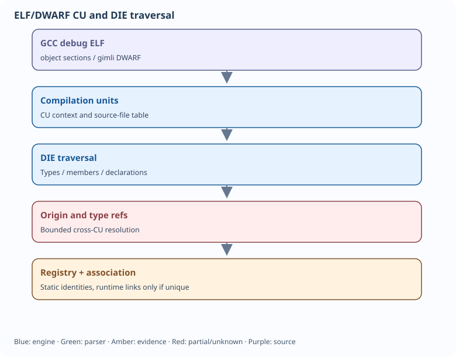
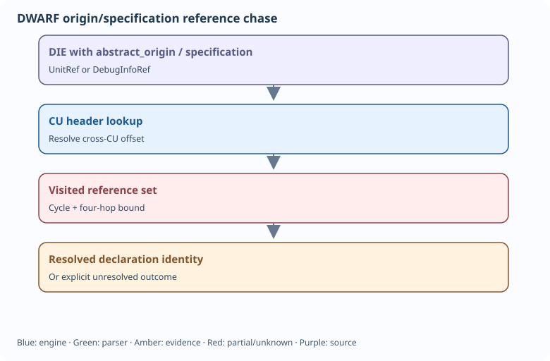

28 · GCC DWARF extraction and observation association #
Key terms #
| Term | Plain meaning |
|---|---|
| ELF | The executable file format of the debug program; DWARF sections live inside it. |
| DIE | A debug-information entry: one DWARF record for something such as a type, variable or member. |
>
The big picture #
src/dwarf.rs reads compiled metadata from the actual GCC debug executable, not the original C text or a GDB location expression. The registry belongs to one trace; its DIE identifiers are not runtime object identities. trace_program calls extract_excluding(&debug_build.binary_path, &tracker_source) after successful compilation, rejects a registry with no project CU, constructs an Arc<ObservationTypes> for stop capture, and finally calls associate(&mut trace) after capture (trace.rs:351-366, trace.rs:423-439, trace.rs:944-955, trace.rs:2728-2760). See AST extraction and fusion for the other two static-evidence steps.
The registry and its identities #
TypeRegistry holds provider/artifact, retained UnitInfo CUs, TypeEntry types, Declaration records, counters and limitations; compilation_units_scanned also counts excluded CUs. UnitInfo records CU name, compilation directory, DWARF version and address size. A type has a CU ID, DIE offset, kind, size/encoding, optional referenced type, members, dimensions and enumerators; a declaration has a kind, source file/line/column, containing function, lexical scope_id, optional type and origin explanation (dwarf.rs:26-124). debug:u<absolute-CU-header-offset> and debug:u...:o<unit-relative-DIE-offset> are generated during the two scans; these distinguish identically named types and statics in different translation units (dwarf.rs:535-574, dwarf.rs:625-647, tests/dwarf_registry.rs:169-214). A declaration's scope_id comes from the parent DIE stack, not from its name; shadowed value declarations retain distinct lexical parents (dwarf.rs:632-647, dwarf.rs:775-818, tests/dwarf_registry.rs:151-167).
ELF sections and the two DIE passes #
extract(path: &Path) and extract_excluding(path: &Path, instrumentation_source: &Path) return Result<(TypeRegistry, ExtractionMetrics), String> through extract_impl; the latter excludes only a CU whose recorded name is the exact injected source path, not a user file sharing its basename (dwarf.rs:577-631). load_dwarf checks the object is at most 64 MiB and has .debug_info or .zdebug_info, parses it with object::File, takes the object's endianness, locates normal or legacy compressed sections, caps aggregate decoded section bytes before decompressing, and gives gimli EndianRcSlices backed by owned Rc bytes. No borrowed object-file buffer escapes this reader boundary (dwarf.rs:478-533).
index_dies(&Dwarf<R>, Instant) first traverses CU headers and all DIEs with next_dfs, recording every absolute .debug_info DIE offset as a CU-qualified key. This supports forward and cross-CU DebugInfoRefs; at most 512 units, 150,000 DIEs and five seconds are accepted (dwarf.rs:15-24, dwarf.rs:535-575). extract_impl reopens the unit iterator without reloading sections; OriginResolver caches parsed units by absolute header offset, while a depth-indexed parent stack supplies the current aggregate, function and lexical scope. It retains recognized type tags and variable, parameter and subprogram declarations, counting otherwise unsupported DIE tags rather than promoting them to known facts (dwarf.rs:603-681, dwarf.rs:775-819). Subprogram DIEs serve source-level function correlation but are excluded from runtime variable matching (dwarf.rs:782-810, dwarf.rs:1052-1068).
Specification and abstract-origin chains #
OriginResolver::resolve starts with attributes on the concrete DIE, follows DW_AT_specification preferentially or DW_AT_abstract_origin, and fills only missing name, source file, line, column and type from each referenced DIE. UnitRef stays in the current CU; absolute DebugInfoRef uses the DIE index to find the owning CU header, converts to a unit offset and loads that entry. The visited key is (absolute CU-header offset, unit DIE offset); four hops maximum, a cycle, an unsupported form or a missing target marks the chain failed. Cross-CU and same-CU hop descriptions are retained when supplemental facts were actually used; unsuccessful chains increment unresolved_origin_references and remain limitations, not file/line guesses (dwarf.rs:181-211, dwarf.rs:213-423, dwarf.rs:648-657, dwarf.rs:859-863). source_file resolves the DIE's line-table file through directory and CU compilation directory, canonicalizing if possible; absolute_source_path instead requires an absolute path for qualified-symbol identity, with lexical normalization if the file moved (dwarf.rs:424-476). A real GCC -O2 -gdwarf-5 -flto test exercises cross-CU abstract origins and checks filled source attributes (tests/dwarf_registry.rs:271-310).
Layout is metadata, not a memory read #
type_kind recognizes base, pointer, array, struct, union, enum, typedef, qualifiers, function and unspecified DIEs. TypeEntry.byte_size comes from DW_AT_byte_size, except pointer size can use the CU address size; DW_AT_type resolves only UnitRef or indexed DebugInfoRef (dwarf.rs:163-191, dwarf.rs:678-701). For struct/union children, Member preserves numeric byte offset, bit size, DW_AT_data_bit_offset and legacy storage-relative DW_AT_bit_offset separately. Missing union location yields an explicitly marked implicit zero; an unhandled member-location expression makes the parent runtime_dependent instead of calculating an offset (dwarf.rs:73-88, dwarf.rs:702-728). Array subranges store signed bounds and numeric count (or derive it from ordered bounds); C's default lower bound is zero. A nonnumeric bound/count sets runtime_dependent, while missing static information is unavailable. Enumerators retain signed or unsigned constants, including negative values (dwarf.rs:729-774). The second resolution pass clears any type/member/declaration reference absent from the retained type set and records the count; excluded-CU references therefore do not masquerade as valid types (dwarf.rs:820-874). The real-GCC layout test covers bit offsets, union zero offsets, enums, multidimensional arrays and VLAs (tests/dwarf_registry.rs:36-149); none of these fields identifies an active union member or proves initialization.
Linking stopped variables without guessing #
The immutable, trace-local ObservationTypes::new(&TypeRegistry) builds location and qualified-symbol lookups before GDB runs. It skips declaration-only and subprogram DIEs, follows at most 64 typedef/qualifier links to find size/aggregate/pointer shape, and withholds size on missing, cyclic or runtime-dependent paths (dwarf.rs:876-971). At each stop gdb_mi::prepare_variable_memory preserves GDB's original size in runtime_size_bytes, calls enrich(&mut VariableInfo, func), and selects the aggregate memory-read budget; requested globals also pass this lookup to recorder::capture_global (gdb_mi.rs:1719-1736, recorder.rs:629-646).
enrich accepts one compatible (declaration_file, declaration_line, variable name) candidate with matching function. The alternate symbol route is only for GDB-qualified names without a declaration line: a quoted file qualifier must normalize to the same full absolute path; bare names and ambiguous location hits cannot fall back to a guessed symbol. A unique match sets type_ref/declaration_ref and missing location fields; DWARF size is a fallback only if an address exists and GDB supplied no size. It returns aggregate shape for the capture budget; is_pointer reports known pointer shape, not pointee extent (dwarf.rs:973-1040, tests/dwarf_registry.rs:379-529). After capture, associate(&mut DebugSessionTrace) -> u64 makes a separate conservative pass over top-frame variables, caller-frame variables and globals, requiring exact file/line/name, compatible function, valid type and exactly one declaration; it attaches only the two DWARF IDs (dwarf.rs:1042-1105). The synthetic ambiguity test leaves both IDs absent and preserves observed values (tests/dwarf_registry.rs:312-377); the stop-time test preserves a runtime size over the static fallback (dwarf.rs:1157-1187).
Failure and scope #
Missing debug sections, invalid/oversized objects, traversal/retention limits, deadline expiration and zero eligible units return an error rather than a plausible empty registry; trace_program retains the runtime trace and adds an analysis note instead (dwarf.rs:480-490, dwarf.rs:545-567, dwarf.rs:870-874, trace.rs:353-367, tests/dwarf_registry.rs:573-597). Unsupported tags, unresolved references and dynamic layout expressions remain explicit partial metadata. DWARF is compiled layout/declaration evidence; GDB observation remains the authority for stopped-state bytes, values, extents and execution. See metadata overview and evidence boundaries.
Diagram notes #
DWARF extraction flow #


Object loading, CU/DIE scans, bounded reference resolution and conservative observation association.
Origin/reference resolution #


Cross-CU references are followed through indexed DIE offsets with a four-hop and cycle bound.